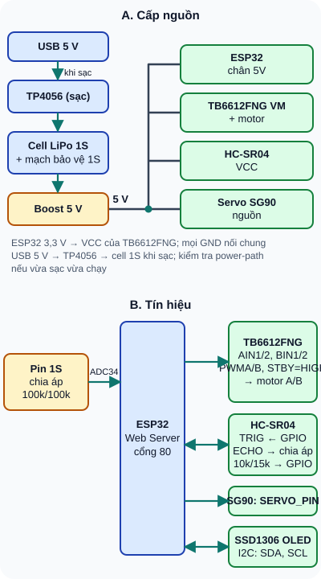
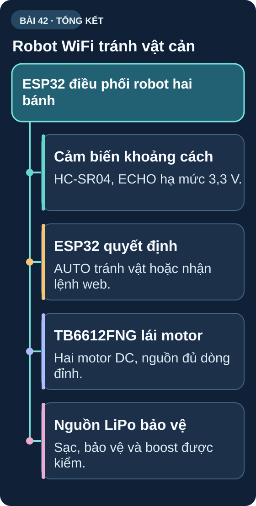

Ôn Tập Tuần 6 & Capstone: Robot WiFi Tránh Vật Cản
Tổng hợp tất cả kiến thức Tuần 6: RTC, WiFi, H-Bridge, HC-SR04, LiPo — xây dựng robot hoàn chỉnh điều khiển qua điện thoại.
1. Ôn tập nhanh Tuần 6
| Câu hỏi | Đáp án |
|---|---|
| DS3231 ưu điểm so với DS1307? | TCXO bù nhiệt → ±2ppm (DS3231) vs ±20ppm (DS1307) |
| ESP32 Web Server endpoint JSON API? | server.on("/api", handler); server.send(200,"application/json", jsonString); |
| NEMA 17: 1/8 microstepping, quay 45°. Số microstep? | 200×8 × (45/360) = 200 microsteps |
| L298N vs TB6612FNG — cái nào thường ít tổn hao dẫn hơn? | TB6612FNG thường ít sụt áp hơn tại cùng điều kiện. Theo Toshiba, tổng V_sat hai transistor điển hình 0,5 V, tối đa 0,7 V ở I_out=1 A, VCC=VM=5 V; L298 có sụt áp cao hơn nhưng phải so tại dòng/nhiệt cụ thể. |
| HC-SR04: ECHO=870µs → khoảng cách = ? | 870/58 = 15cm |
| Pin LiPo một cell được sạc đầy ở điện áp nào? | 4,20V danh định với cell loại 4,2V; IC sạc CC/CV kết thúc chu kỳ theo dòng sạc, còn ngưỡng bảo vệ tùy IC/board. |
2. Capstone Project Tuần 6: Robot WiFi Tránh Vật Cản
- Vi điều khiển: ESP32 (WiFi + ADC + nhiều GPIO)
- Motor: 2× DC geared motor loại 3–6V, điều khiển bằng TB6612FNG; kiểm tra dòng kẹt trục (stall) trước khi chọn nguồn.
- Cảm biến: HC-SR04 siêu âm + PIR phát hiện người (tùy chọn)
- Servo: SG90 quét HC-SR04 trái/phải
- Nguồn: một cell LiPo 3,7V 2000mAh + module TP4056 có IC bảo vệ riêng + boost 5V; chọn cell, mạch bảo vệ, boost theo tổng dòng đỉnh của motor, servo và ESP32.
- Điều khiển: Web server WiFi → điều khiển từ điện thoại (tiến/lùi/rẽ/stop)
- Tính năng tự động: khi nhận lệnh "AUTO" → tự tránh vật cản
- Monitor: OLED 128×64 hiển thị trạng thái, khoảng cách, % pin
2.1 Kiến trúc hệ thống

Đọc mô tả D42-1
Phần A: USB 5 V qua TP4056 sạc cell LiPo 1S có mạch bảo vệ; pin qua boost 5 V cấp cho ESP32, VM của TB6612FNG và motor, HC-SR04 và servo; ESP32 3,3 V cấp VCC của TB6612FNG; GND nối chung. Phần B: ESP32 điều khiển TB6612FNG bằng AIN, BIN, PWM và STBY; TRIG tới HC-SR04 còn ECHO qua chia áp 10k/15k về GPIO; servo SG90; OLED SSD1306 qua I2C; pin 1S qua chia áp 100k/100k vào ADC34. Đây là sơ đồ để phân tích/mô phỏng; chỉ lắp trên phần cứng sau khi xác minh đúng part/module, nguồn, dòng và duyệt mạch cụ thể.
Chân ECHO của HC-SR04 cấp 5V không nối trực tiếp tới GPIO ESP32 3,3V: với rail 5V ổn áp 4,75–5,25V, dùng 10kΩ từ ECHO tới GPIO và 15kΩ từ GPIO xuống GND, cho khoảng 3,0V ở 5V; kiểm tra rail và ngưỡng đầu vào của board thực. Xem hướng dẫn HC-SR04 của Adafruit và datasheet ESP32-WROOM-32. Theo datasheet TB6612FNG của Toshiba, rail logic 3,3V và rail motor 5V phù hợp; chân STBY phải ở mức HIGH, dòng liên tục tối đa 1A/kênh ở VM≥4,5V. Chọn motor có dòng kẹt trục và nhu cầu tản nhiệt phù hợp; kiểm tra dòng đỉnh của servo/ESP32 để chọn boost, pin và mạch bảo vệ có dự phòng. Module TP4056 chỉ sạc một cell và khả năng bảo vệ phụ thuộc linh kiện gắn thêm trên board.
2.2 Chức năng Web Interface
// Web interface đơn giản — điều khiển robot từ điện thoại
// Truy cập http://<IP_ESP32> trên cùng mạng WiFi
// Endpoints API:
// /ctrl?cmd=F → forward
// /ctrl?cmd=B → backward
// /ctrl?cmd=L → turn left
// /ctrl?cmd=R → turn right
// /ctrl?cmd=S → stop
// /ctrl?cmd=AUTO → chế độ tự động tránh vật cản
// /status → JSON: {dist, battery, mode, speed}
void handleCtrl() {
String cmd = server.arg("cmd");
if (cmd=="F") { setMode(MANUAL); forward(speed); }
else if (cmd=="B") { setMode(MANUAL); backward(speed); }
else if (cmd=="L") { setMode(MANUAL); turnLeft(speed); }
else if (cmd=="R") { setMode(MANUAL); turnRight(speed); }
else if (cmd=="S") { setMode(MANUAL); stopMotors(); }
else if (cmd=="AUTO") { setMode(AUTO); }
server.send(200, "application/json", "{\"ok\":true}");
}
3. Tổng kết Tuần 6
| Bài | Kỹ năng đạt được |
|---|---|
| 36 | DS3231 RTC I2C — đồng hồ thực chính xác, alarm |
| 37 | ESP32 WiFi — Web Server, JSON API, MQTT |
| 38 | Stepper A4988, Servo SG90 — điều khiển góc chính xác |
| 39 | H-Bridge L298N — motor 2 chiều, PWM tốc độ |
| 40 | HC-SR04 siêu âm — đo khoảng cách, lọc nhiễu |
| 41 | LiPo + BMS + TP4056 — nguồn pin an toàn |
| 42 | Capstone — Robot WiFi tích hợp toàn bộ kiến thức Tuần 6 |
Tuần 7–8 là phần đỉnh cao của khóa học: thiết kế đồ án hoàn chỉnh từ đầu đến cuối — bao gồm lên ý tưởng, thiết kế mạch, viết firmware, thiết kế PCB, hàn và test. Hãy bắt đầu suy nghĩ về dự án cuối khóa ngay từ bây giờ: trạm thời tiết IoT, robot tự hành, máy đo điện tim, hay bộ điều khiển tưới cây tự động?
Sơ đồ tổng hợp Bài 42

Đọc nội dung sơ đồ bằng chữ
- Cảm biến khoảng cách: HC-SR04, ECHO hạ mức 3,3 V. (mục Kiến trúc hệ thống).
- ESP32 quyết định: AUTO tránh vật hoặc nhận lệnh web. (mục Chức năng Web Interface).
- TB6612FNG lái motor: Hai motor DC, nguồn đủ dòng đỉnh. (mục Kiến trúc hệ thống).
- Nguồn LiPo bảo vệ: Sạc, bảo vệ và boost được kiểm. (mục Capstone Project Tuần 6).